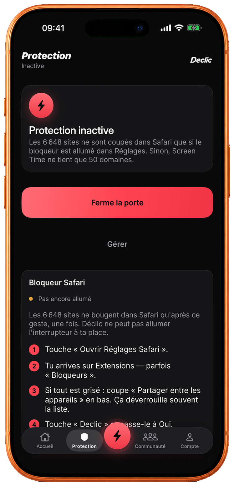
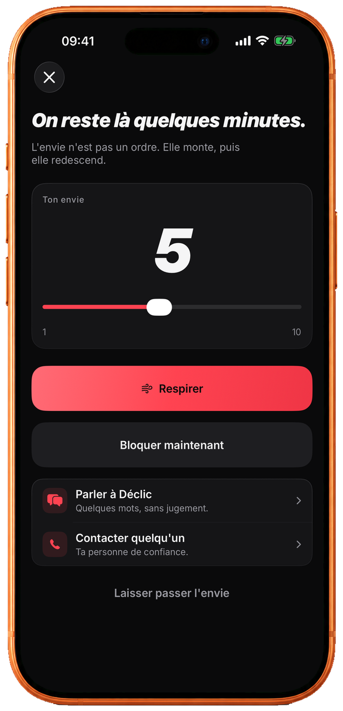

Exemple de progression
24 jours sans jouer Meilleur parcours : 25 joursSafariSites de jeu coupés
Temps d’écranApps de paris bloquées
48 heuresAvant d’arrêter la protection
FranceConçu ici, pour toi
00:01 — LE DÉCLIC
Pas un sermon.
Une porte qui se ferme.
Parce qu’au moment où tout s’accélère, la volonté seule ne suffit pas toujours. Déclic met de la distance entre l’envie et le geste — puis reste là, sans juger.
01 / PROTECTION
Ferme la porte
au jeu.
Choisis les apps et les sites à bloquer. Une fois activée, la protection reste en place. Pour l’arrêter, une attente de 48 heures commence.
- Des milliers de sites de jeu coupés dans Safari
- Les apps de jeu bloquées via Temps d’écran
- Arrêt après 48 h, ou avec l’accord d’un proche


02 / QUAND ÇA MONTE
L’envie n’est
pas un ordre.
Note son intensité. Respire, parle, ou laisse la vague redescendre. Si nécessaire, renforce le blocage immédiatement.
01NommerCe qui se passe
02RespirerQuelques minutes
03TraverserSans rester seul
03 / TON PARCOURS
Regarde ce que
tu récupères.
Des jours sans jouer, une estimation de l’argent préservé et des envies traversées. Pas pour être parfait. Pour voir le chemin déjà fait.
04 / CONFIANCE
Conçu pour aider.
Pas pour surveiller.
Tes blocages restent à toi
Les apps, catégories et sites personnels que tu choisis restent sur ton iPhone.
Pas de publicité ciblée
Déclic n’est pas financé par ton attention et ne vend pas tes données.
Des règles claires
Les données liées au compte et aux services en ligne sont expliquées sans détour.
Lire la politique de confidentialité ↗05 / QUESTIONS
Les réponses
sans détour.
Blocage, délai, données, aide. Si tu ne trouves pas ce que tu cherches, écris-nous.
Déclic peut-il bloquer les sites et apps de paris ?
Oui. Déclic coupe des milliers de sites de jeu dans Safari et bloque les apps de paris via Temps d’écran d’Apple. Tu choisis ce qui est protégé. Tes choix restent sur ton iPhone.
Comment arrêter la protection ?
Une fois activée, la protection reste en place. Pour l’arrêter, une attente de 48 heures commence. Tu peux aussi demander l’accord d’un proche de confiance.
Déclic est-il un traitement médical ?
Non. Déclic est un outil de blocage et de soutien. Ce n’est pas un dispositif médical, ni un substitut à un accompagnement professionnel.
Mes données de jeu restent-elles privées ?
Les apps, catégories et sites que tu bloques restent sur ton iPhone. Déclic ne vend pas tes données et ne fait pas de publicité ciblée. Le détail est dans la politique de confidentialité.
Quand Déclic sera-t-il disponible ?
Déclic arrive bientôt sur l’App Store, pour iPhone. Tu peux déjà ouvrir la fiche de l’app et t’y préparer.
Que faire si l’envie est trop forte maintenant ?
Joueurs Info Service répond au 09 74 75 13 13, tous les jours de 8 h à 2 h. En cas d’idées suicidaires, le 3114 répond 24 h/24.
LE PROCHAIN CHAPITRE
Commence ici.
Pas demain.
Un premier geste, puis le suivant. Déclic arrive bientôt sur iPhone.
Bientôt sur l’App Store Déclic est un outil de blocage et de soutien. Ce n’est pas un dispositif médical.